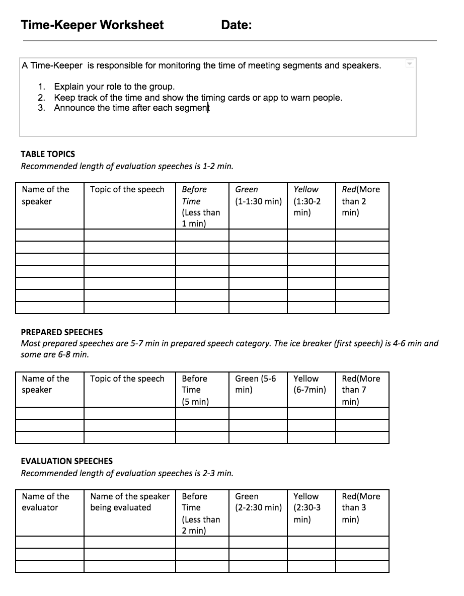

<!-- Main -->
	<div id="main" class="wrapper style1">
		<div class="container">
			<section>
				<p align="center"></p>
				<div class="10u -1u">
					<header class="major">
						<!-- <h2>Blog</h2> -->
						<!-- <span class="byline">Integer sit amet pede vel arcu aliquet pretium</span> -->
					</header>
					<h2>Summary of the Role</h2>
					<ul>
						<li>The Timekeeper is responsible for monitoring the time of meeting segments and speakers. </li>
						<li>At the beginning of the meeting, explain your role to the group.</li>
						<li>Keep track of the time for table topics (1-2 minutes), speeches (usually 5-7 minutes, check with the Toastermaster), and evaluator (2-3 minutes). </li>
						<li>Give warnings before people go over time.</li>
						<li>At the end of each segment, mention the time taken by each speaker.</li>

</ul><br>
<h2>Evaluation form</h2>
Download: <a href="Time-KeeperSheet.pdf"></a>
	
	<br>

<a href="https://www.toastmasters.org/Membership/Club-Meeting-Roles/Timer"><h2>Resource from Toastmasters International</h2></a>


				</div>
			</section>
		</div>
	</div>
